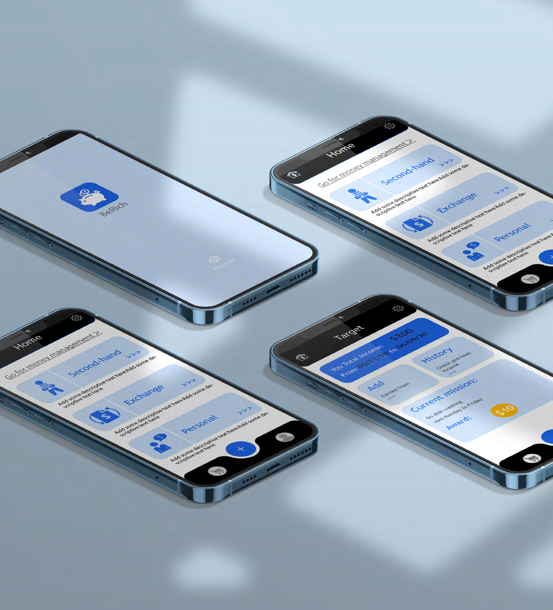

Berich
Financial education for the next generation.
When I was in high school, most of my peers couldn't save money and found it hard to have any money left at the end of the month. Inspired by this phenomenon, Berich helps teenagers manage their own money—to simply record their consumption and cultivate financial consciousness.

Research
The research explored financial habits among teenagers and the challenges they face in money management, identifying opportunities for educational intervention through intuitive design.

Outcome
A financial education and investment platform with a user-friendly interface designed to simplify complex financial concepts, helping young users develop better money management habits.